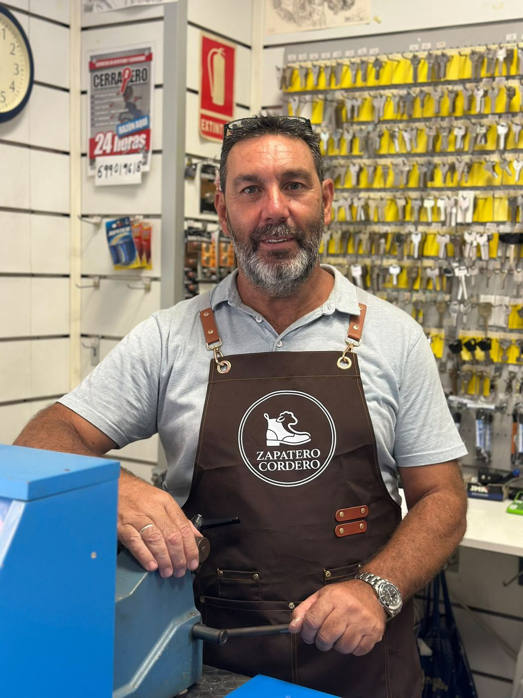

Oficio, cercanía y un servicio que no espera.
Mucho antes de abrir su propio taller, Francisco Manuel Cordero González ya se dedicaba a este oficio: desde 1993 formó parte de una reconocida empresa del sector, con presencia en diferentes centros comerciales, donde durante más de veinte años perfeccionó cada técnica de la reparación de calzado.
Esa experiencia es la que trajo consigo en 2015, cuando decidió abrir Zapatero Cordero en Calle Baños, en pleno centro de Sevilla. Desde entonces, y siempre en solitario, está al frente del taller: cada zapato, cada llave y cada trabajo de piel pasa por sus manos.
Once años después, el taller sigue funcionando igual que el primer día: a mano, sin prisas mal entendidas y con la calidad de un oficio que ya acumula más de tres décadas de dedicación.

Mientras en otros zapateros esperar días es lo normal, aquí sabemos que unos zapatos rotos o una llave perdida no pueden esperar: la mayoría de arreglos salen el mismo día.
Cada reparación se hace de forma artesanal, sin atajos, con la calidad de un oficio que ya no abunda.
Se utilizan pieles seleccionadas para que la reparación no solo quede bien, sino que dure de verdad.
Cercanía y amabilidad, como en los negocios de toda la vida — aquí no eres un número, eres un vecino.
Todo el trabajo realizado en el taller cuenta con garantía.